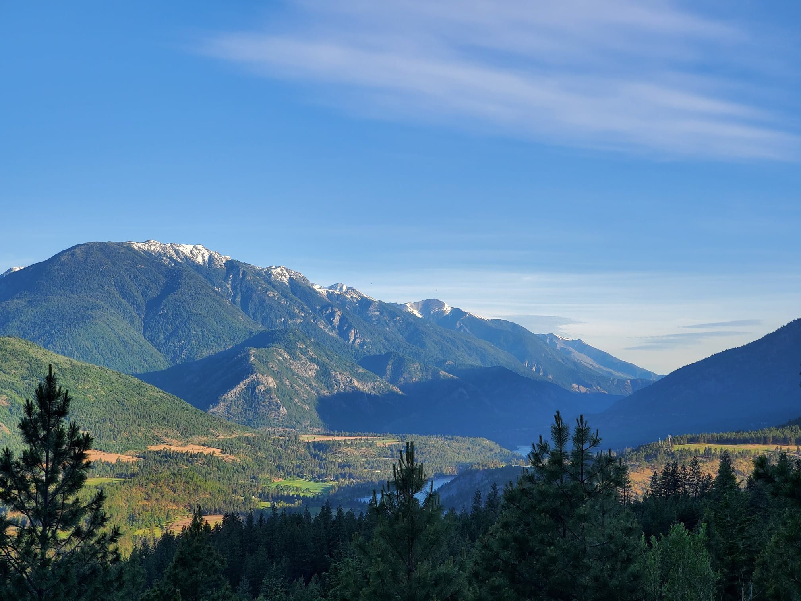
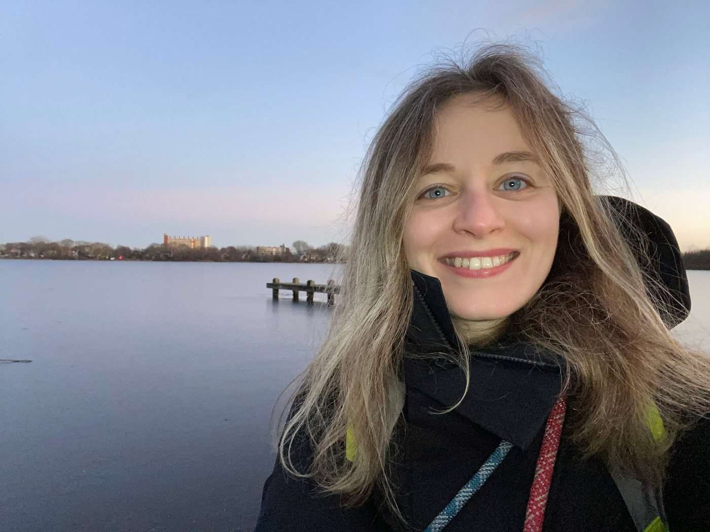

Tuğba Altın — Researcher in Environmental Design
Hello
I am a researcher in environmental design. I explore the relationships between people, place, and environmental change, with a particular interest in the lived experiences of disaster and recovery.

About

- PhD · Environmental Design
- University of Calgary
- MSc · Sustainable Architecture & Landscape Design
- Politecnico di Milano
- BA · Urban Design & Landscape Architecture
- Bilkent University
My research explores how people experience environmental change and rebuild their relationships with places after disaster. I am particularly interested in the memories, emotions, and everyday experiences that shape recovery.
I completed my PhD in Environmental Design at the University of Calgary in December 2025. My doctoral work focused on the 2021 Lytton Creek Fire in British Columbia, exploring place attachment and memoryscapes — how people remember and emotionally engage with a changed landscape. Through walking audio sessions and photo elicitation, I worked with affected communities to understand how these relationships shape recovery and adaptation.
My background in urban design, landscape architecture, and sustainable architecture grounds my research in the social and spatial dimensions of environmental change. I bring this design perspective into dialogue with urban studies and interpretive, participatory methods, connecting lived experience with questions of community recovery, belonging, and adaptation. Alongside my research, I have taught at the University of Calgary’s School of Architecture, Planning and Landscape and at Rutgers University, and collaborated on projects addressing climate emotions, displacement, and urban resilience.